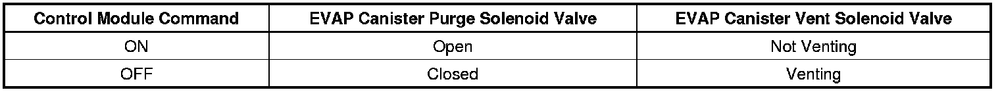

P0455
DTC P0455
Diagnostic Instructions
* Perform the Diagnostic System Check - Vehicle (Initial Inspection and Diagnostic Overview) prior to using this diagnostic procedure.
* Review Strategy Based Diagnosis (Initial Inspection and Diagnostic Overview) for an overview of the diagnostic approach.
* Diagnostic Procedure Instructions (Initial Inspection and Diagnostic Overview)provides an overview of each diagnostic category.
DTC Descriptor
DTC P0455
- Evaporative Emission (EVAP) System Large Leak
Circuit/System Description
The control module tests the evaporative emission (EVAP) system for a large leak. The control module monitors the fuel tank pressure (FTP) sensor signal to determine the EVAP system vacuum level. When the conditions for running are met, the control module commands the EVAP canister purge solenoid valve OPEN and the EVAP vent solenoid valve CLOSED . This allows engine vacuum to enter the EVAP system. At a calibrated time, or vacuum level, the control module commands the EVAP canister purge solenoid valve closed, sealing the system, and monitors the FTP sensor input in order to determine the EVAP system vacuum level. The following table illustrates the relationship between the ON and OFF states, and the OPEN or CLOSED states of the EVAP canister purge and vent solenoid valves.

Conditions for Running the DTC
* DTCs P0107, P0108, P0112, P0113, P0116, P0117, P0118, P0120, P0125, P0442, P0443, P0446, P0449, P0452, P0453, P1111, P1112, P1114, P1115, P1516, P2101, P2119, P2120, P2125, P2135, P2138 are not set.
* The engine is running.
* The ignition voltage is between 10-18 volts.
* The barometric pressure (BARO) is more than 74 kPa.
* The fuel level is between 15-85 percent.
* The start-up engine coolant temperature (ECT) is less than 30°C (86°F).
* The start-up intake air temperature (IAT) is less than 30°C (86°F).
* The start-up ECT and IAT are within 8°C (14°F) of each other.
* DTC P0455 runs once per cold start within 16 minutes of start-up.
Conditions for Setting the DTC
The EVAP system is not able to achieve or maintain vacuum for up to 4 times during the diagnostic test.
Action Taken When the DTC Sets
DTC P0455 is a Type B DTC.
Conditions for Clearing the MIL/DTC
DTC P0455 is a Type B DTC.
Diagnostic Aids
* A loose, missing, incorrect, or damaged fuel fill cap may cause this DTC to set.
* To help locate intermittent leaks, use the J 41413-200 Evaporative Emissions System Tester (EEST) to introduce smoke into the EVAP system. Move all EVAP components while observing smoke with the J 41413-SPT High Intensity White Light. Introducing smoke in 15-second intervals will allow less pressure into the EVAP system. When the system is less pressurized, the smoke will sometimes escape in a more condensed manner.
* To improve the visibility of the smoke exiting the EVAP system, observe the suspected leak area from different angles with the J 41413-SPT .
Reference Information
Schematic Reference
* Evaporative Emissions Hose Routing Diagram ([1][2]Emission Control Systems)
* Engine Controls Schematics (Electrical Diagrams)
Connector End View Reference
Component Connector End Views (Connector Views)
Electrical Information Reference
* Circuit Testing (Component Tests and General Diagnostics)
* Testing for Intermittent Conditions and Poor Connections (Component Tests and General Diagnostics)
* Wiring Repairs (Component Tests and General Diagnostics)
DTC Type Reference
Powertrain Diagnostic Trouble Code (DTC) Type Definitions (Diagnostic Trouble Code Descriptions)
Scan Tool Reference
Control Module References (Programming and Relearning)for scan tool information
Special Tools Required
* J 41413-200 Evaporative Emission System Tester (EEST)
* GE-41415-50 Fuel Tank Cap Adapter
* J 41413-SPT High Intensity White Light
* CH-48096 EVAP Service Access Port Tool
* J 41413-300 EVAP Cap and Plug Kit
* J 41413-311 EVAP Plug
Circuit/System Testing
Important:
* Larger volume fuel tanks and/or those with lower fuel levels may require several minutes for the floating indicator to stabilize.
* Refer to the J 41413-200 operation manual for detailed instructions.
1. Connect the J 41413-200 to the vehicle EVAP service port. For vehicles without a service port, disconnect the purge tube at the quick connector on the EVAP canister side of the purge solenoid valve and install the CH-48096 .
2. Seal the EVAP system and use the flow meter on the J 41413-200 calibrated to 0.51 mm (0.02 in) to determine that there is no leak in the EVAP system.
• If a leak is detected, use the J 41413-200 to apply smoke to the EVAP system at the service port until the leak is located.
3. To test for a restriction, connect the J 41413-200 nitrogen/smoke hose to the J 41413-311 brass cone adapter. Disconnect the hose at the fuel cap end of the GE-41415-50 . Connect the J 41413-311 to the disconnected hose on the GE-41415-50 . Install the GE-41415-50 filler neck end only to the vehicle.
4. Allow the engine to idle.
5. Use the Purge/Seal function to seal the system with a scan tool.
6. Command the EVAP canister purge solenoid valve to 30 percent.
7. The vacuum/pressure gage on the J 41413-200 and the FTP parameter on the scan tool should both show vacuum.
• If the vacuum/pressure gage shows vacuum but the FTP parameter does not show vacuum, replace the FTP sensor.
• If neither the FTP parameter nor the vacuum/pressure gage shows vacuum, repair the restriction in the purge path. Refer to Evaporative Emissions Hose Routing Diagram ([1][2]Emission Control Systems) .
8. Verify that the vacuum increases to the abort limit on the scan tool or more than 3.2 volts, and the value is closely similar between the scan tool and the vacuum/pressure gage on the J 41413-200 .
• If the values are not similar or the voltage did not reach 3.2 volts, replace the FTP sensor.
Repair Instructions
Perform the Diagnostic Repair Verification (Verification Tests) after completing the diagnostic procedure.
* Fuel Tank Pressure Sensor Replacement (Service and Repair)
* Control Module References (Programming and Relearning)for engine control module (ECM) replacement, setup, and programming
* Evaporative Emission System Cleaning (Service and Repair)